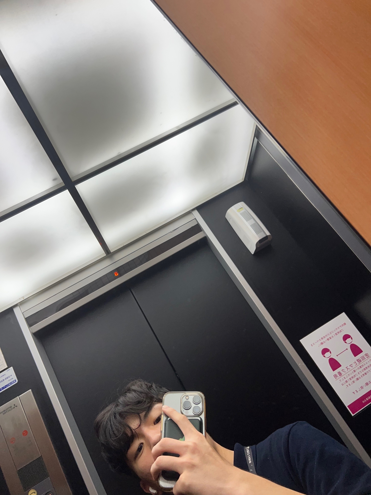
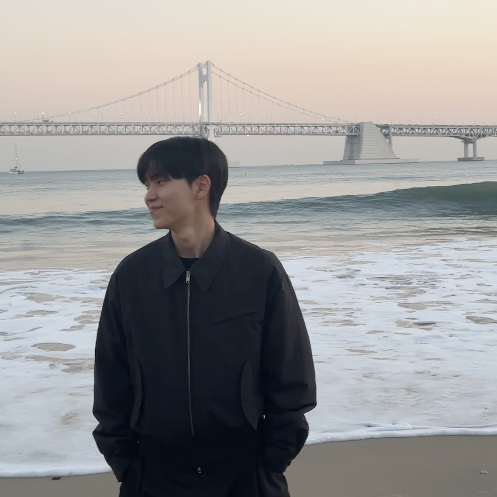
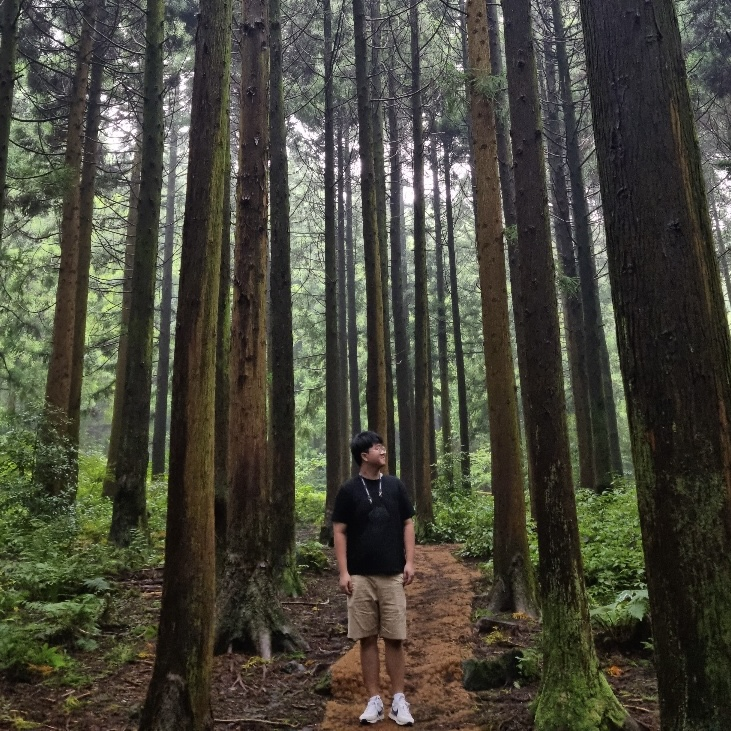

이여재 ENFP
한서대학교 항공소프트웨어공학과 3학년 휴학중이며, 전공자이지만 비전공자와 같은 수준의 코딩 실력을 가지고 있는 사납지만 귀여운 사자같은 사람이다.

유지영 ESTP
비전공자 말하는 감자. 신기하신가요? 신조는 일단 해보면 다 된다. 모든 닉네임을 유지영구라지로 통합할 원대한 계획을 가지고 있습니다. 커피, 위스키, 강아지, 체향이 향기로운 사람, 음악을 좋아합니다. 취미로 밴드와 버스킹을 합니다. 저와 좋아하는 것이 비슷하다면 미호를 외쳐!

여운호 ISFJ
철의 의지와 쿠쿠다스 신체를 지닌 개발자 지망생 보리 견주다. 산보단 바다, 여름보단 겨울, 부먹보단 찍먹, 펩시보단 코카, 완숙보단 반숙, 쌀떡보단 밀떡을 좋아한다. 취미는 옷, 사진, 음악.

최재원 INFP
부경대학교 컴퓨터공학과를 졸업하고 개발자로 취업을 준비중인 최재원입니다. 취미는 게임, 영화, 등산하기 등 있습니다.
